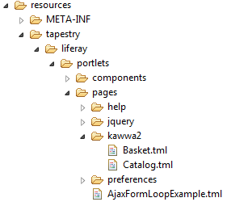

New project setup
HomeRead this section if you need to create a new Liferay portlet project with Tapestry.
Creating a new Tapestry project
First, create a new Tapestry project, by using the following maven command line:
You will be asked to define the following parameters:
You can now import the newly created project in Eclipse with File > Import > Existing Maven Projects.
Setting project dependencies
In the pom.xml file of your project, you will need to add the following dependencies:
Check the following URL to get the last version of tapestry-liferay: https://github.com/got5/tapestry5-liferay.
Editing WEB-INF XML configuration files
Add these three files in your WEB-INF folder.
In this file are listed all the portlets of your application.
There are a few things you need to know when you create a Tapestry portlet.
First, portlet-class value will ALWAYS be org.apache.tapestry5.portlet.ApplicationPortlet.
You define the page linked to the portlet with the portlet-name attribute. This is the page name, as registered in Tapestry. In the example below, the AjaxFormLoopExample.tml portlet name will be AjaxFormLoopExample. Catalog.tml name will be kawwa2/Catalog.

As many portlet implementors, Liferay Portal has its own features and behaviours. The liferay-portlet.xml file allows you to configure those. In case of Tapestry portlet integration, you will have to specify some of them to integrate well with Tapestry. Have a look at the snippet below:
Every portlet declared in the portlet.xml must match one element in this document. Also the portlet-name must match a corresponding portlet in portlet.xml.
Set the action-url-redirect to true, this is important to enable the redirect-after-post behaviour. By default, Liferay will not redirect the user after an action request but will simply launch render request in the same thread. This behaviour is not consistent with Tapestry's design because it can lead to double-submit problem on page refresh.
Set the instanceable to true if you need to instantiate the portlet more than once per page.
Important: set the private-request-attributes to false will allow the portlet to share request attributes with others.This will allow us to handle JS and CSS includes properly within the portal page "head" part. Without this property set to false, you may have duplicate resources in the body of the containing portal page.
Display informations for your portlets are found in this file. It makes it possible for users to add portlets via the personalize pages screen.

Portlet id refers to portlet.xml